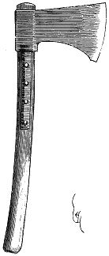

Eugène VIOLLET le DUC
Dictionnaire raisonné du mobilier.
 Figure 1 HACHE s. f. (hasche, hachon, barde, hachette, clache, destrau, dosse, hapiette, happe, paffus, piarde, quegniette). Cette quantité de noms donnés à un même objet indique les usages variés auxquels il était destiné. Indépendamment de la hache, arme de guerre, fort usitée depuis les Mérovingiens jusqu'au XVIe siècle, la hache, outil, était entre les mains de tous les hommes qui travaillaient le bois, depuis le bûcheron jusqu'au menuisier. La hachette même était, comme aujourd'hui encore, un outil de maçons. La doloire (voyez ce mot) n'était qu'une hache à manche très court et la cognée des charpentiers une hache à manche long. La grande hache, employée pour l'équarrissage des bois, était un très bel outil, bien emmanché, ayant une grande puissance d'abatage (fig. 1). Ces haches sont de la même dimension que celles employées encore par nos charpentiers, mais plus fortement emmanchées et retenues au bois par un long étrier.